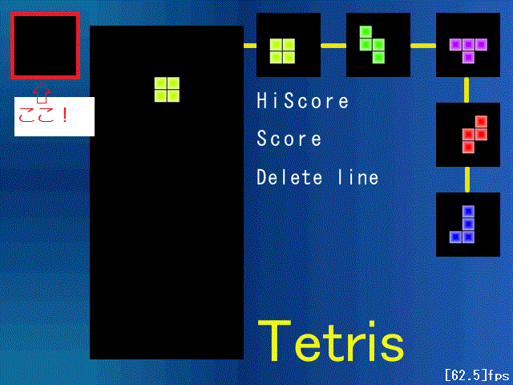
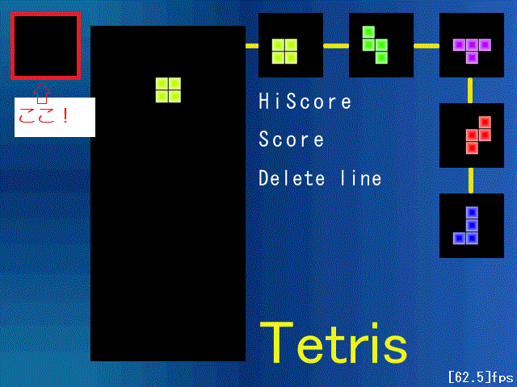

今回はここです↓

ポイントはストック入れ替え後のreturnです。
これをしないと(書く順番の影響もありますが)初期化されたばかりの現在テトリミノが
後の落下処理などを通ってしまい、うまく機能しません。
・GV.hにTetriMino stock
・control.cppにstatic bool stockFlag
を追加します。
stockFlagは連続ストックを防止するために
このターン中にストックをしたかどうかを記憶しておくためのものです。
今回はここです↓

ポイントはストック入れ替え後のreturnです。
これをしないと(書く順番の影響もありますが)初期化されたばかりの現在テトリミノが
後の落下処理などを通ってしまい、うまく機能しません。
・GV.hにTetriMino stock
・control.cppにstatic bool stockFlag
を追加します。
stockFlagは連続ストックを防止するために
このターン中にストックをしたかどうかを記憶しておくためのものです。
//GV.h #ifdef FIRST_LOADING #define E #else #define E extern #endif //コンフィグクラス E Config config; //画像イメージ namespace IMG{ E int board[3];//背景画像 E int block[7];//ブロック画像 E int num[10]; //数字画像 }; //現在のテトリミノ E TetriMino cur; //フィールド上のブロック E list<Block> blkList; //ネクストブロックリスト E list<TetriMino> nextList; //ストック E TetriMino stock;
//control.cpp #include "../include/main.h" //ストックフラグ static bool stockFlag=false; //コントロール void Control(){ if(cur.flag){ //入力状況を取得 int input[]={ CheckStatePad(config.left), CheckStatePad(config.right), CheckStatePad(config.up), CheckStatePad(config.down), CheckStatePad(config.lspin), CheckStatePad(config.rspin), CheckStatePad(config.stock), }; //自動落下の間隔 int interval=40; //左 if(input[0]==1 || (input[0]>12 && input[0]%5==0)){ AddX(cur,-BS); if(!IsValid(cur))AddX(cur,BS); }//右 else if(input[1]==1 || (input[1]>12 && input[1]%5==0)){ AddX(cur,BS); if(!IsValid(cur))AddX(cur,-BS); }//上 else if(input[2]==1){ while(IsValid(cur)){ AddY(cur,BS); } AddY(cur,-BS); cur.wait=60; }//下 else if(input[3]){ interval=5; } //回転 if(input[4]==1){ Spin(cur,true); } else if(input[5]==1){ Spin(cur,false); } //ストック if(input[6]==1){ if(!stockFlag){//連続ストックでなければ //初期位置へ戻しておく cur.x=FX+BS*6; cur.y=FY-BS*2; cur.cnt=0; cur.wait=0; //ストックと入れ替え swap(cur,stock); //ストックフラグon stockFlag=true; return ; } } if(cur.cnt%interval==0){ //自動落下 AddY(cur,BS); if(!IsValid(cur)){ AddY(cur,-BS); cur.wait++; } } //着地したら if(cur.wait>0){ cur.wait++; } //猶予時間経過したら if(cur.wait>60){ //着地完了 cur.flag=false; //保持しているblkをフィールドへ追加 for(int i=0;i<4;i++){ blkList.push_back(cur.blk[i]); } //ストックフラグをoffに stockFlag=false; } //カウントアップ cur.cnt++; } else{ //先頭を取り出す cur=nextList.front(); //先頭を消す nextList.pop_front(); //末尾に追加 nextList.push_back(CreateTetriMino(Point(FX+BS*6,FY-BS*2), (BLK_COL)GetRand(BLK_KND_NUM-1))); //画面内有効フラグをtrueに cur.flag=true; } }
//draw.cpp #include "../include/main.h" //ブロック描画 void DrawBlock(){ ・ ・ ・ //ストックの描画 for(int x=0;x<5;x++){ for(int y=0;y<5;y++){ if(stock.field[x][y]){ DrawGraph(BS+BS*x,BS+BS*y,IMG::block[(int)stock.blk[0].knd],true); } } } } ・ ・ ・